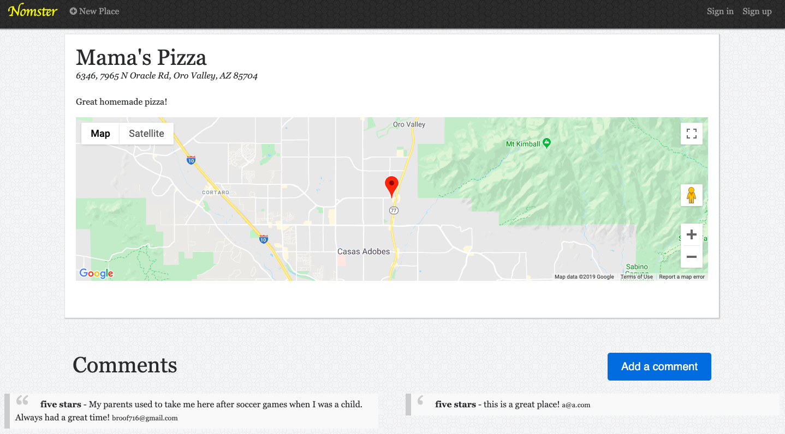
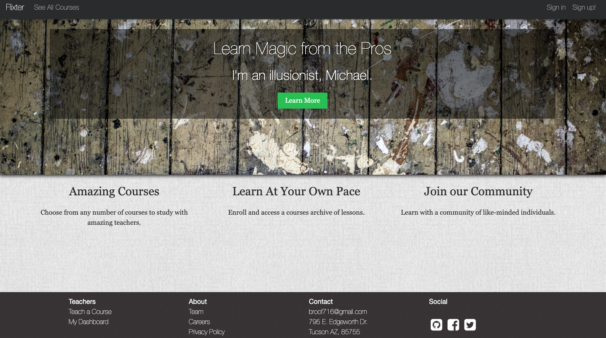
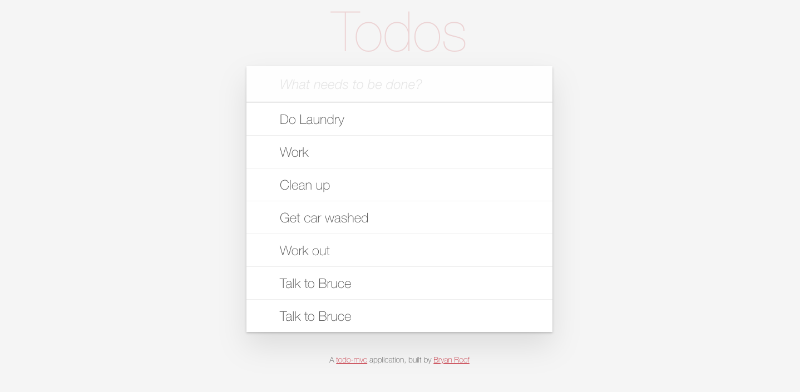

Web Application
Quote Generator
A database-powered quote generator with a mobile-first design, using the Ruby on Rails framework, HTML, and CSS. Uses Git and GitHub for version control, and launched on Heroku.
Web Application Github
Yelp Clone
A Yelp clone that integrates with the Google Maps API and includes features like user comments, star ratings, image uploading, and user authentication.
Web Application Github
Two-Sided Market Place
A two-sided, video-streaming marketplace platform that features credit card payment capabilities, user role management, complex user interfaces, and advanced database relationships.
Web Application Github
Test Driven Development
An Instagram clone that was built using industry-standard, test-driven development following numerous red/green/refactor cycles.
Web Application Github
Single Page Todo Application
This single-page to-do application features a fluid user interface that– by using JavaScript– allows users to rapidly add dynamic content.
Web Application Github
Skills & Tools
Bryan has established and advanced his efficiency and expertise in the following programming languages and is proficient in the following tools.